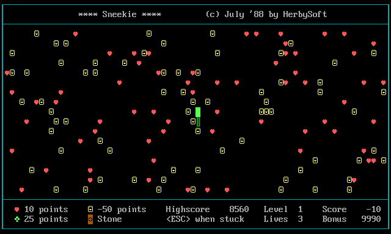
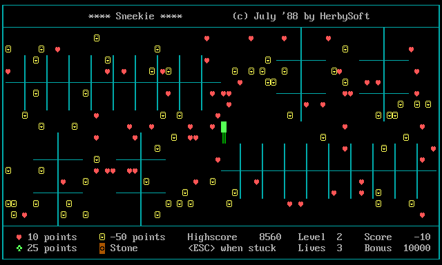
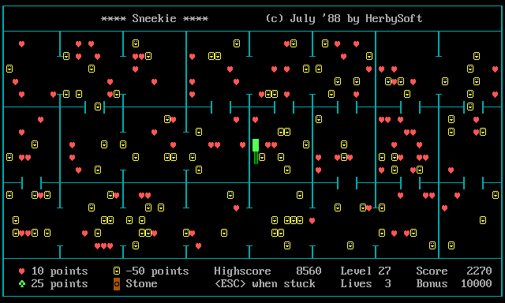
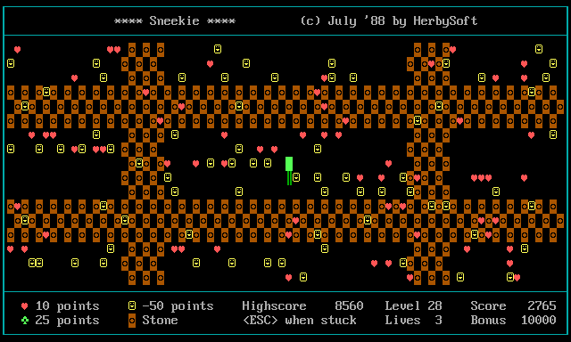
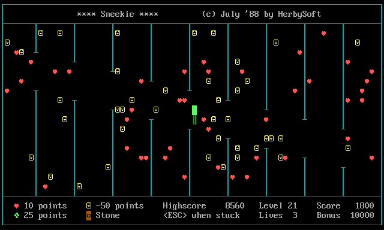
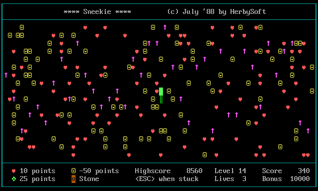
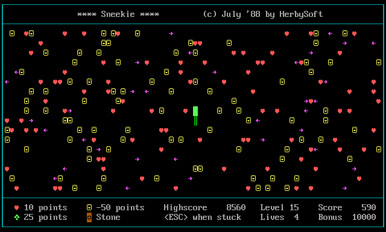
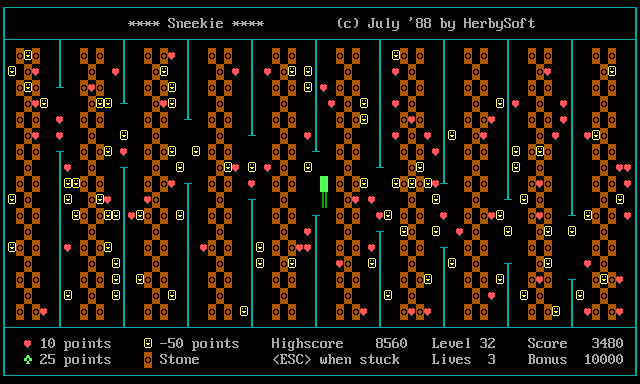

Sneekie is a snake-in-a-maze game from July 1988. You steer a growing snake around a walled arena, hoovering up ♥ hearts. Clear every heart and you advance — through 32 levels built from 8 maze layouts. Mind the walls, the deadly arrows, and the smileys that cost you points. This page explains everything: the controls, the scoring, each of the 8 layouts, and how the 32 levels are put together.
New here? Just hit ▶ Play and start collecting hearts — the first few levels are turn-based and forgiving. Come back when you want to know what the smileys do or why the arrows keep killing you.
The goal
Each level scatters a crowd of ♥hearts across the arena. Eat them all and the level is cleared — whatever bonus time is left pours into your score, you earn a life, and the next level begins. The snake grows by one segment every time it eats anything, so the playfield gets tighter as you go.
Controls
Key
Touch
What it does
←↑↓→
Swipe
Steer the snake. It can't reverse straight back into itself.
any key
Tap
Dismiss the “Press any key” pop-ups between levels.
Esc
—
Give up when you're boxed in. Costs one life and restarts the level.
F9
—
Cheat: extra life — and skips you to the next level.
F10
—
Cheat: skip the level.
Pressing a letter key (or steering into a wall) just bonks you: you stay put and lose a little bonus. Below the screen are the cabinet controls: the Green / Amber / White / CGA display themes, a Sound toggle, and Fullscreen (in fullscreen, press & hold Esc to leave — a single tap still works as “give up”).
The screen
The play area is framed by a border you can't cross. The status strip along the bottom shows:
Level — which of the 32 levels you're on.
Score / Highscore — your points; the best is kept between visits.
Lives — how many tries you have left.
Bonus — a timer that starts at 10000 and ticks down every step. Clear the level fast and the leftover is added to your score.
Items & scoring
Symbol
Item
Effect
♥
Heart
+10. Collect all of them to clear the level.
♣
Club
+25. A juicier treat (from level 17 on, hearts can drop one).
☺
Smiley
−50! — the trap. Eating one stings and grows you for nothing. Steer around them.
◙
Stone
A boulder. No points — but you can push it one cell if the space behind is clear.
↑→←
Arrow
Deadly. Touch a moving arrow and you lose a life.
│─
Wall / yourself
Solid. You can't move into a wall or your own body — you just bonk (−bonus).
Lives
You start with 3 lives. You lose one whenever you die — by hitting a moving arrow, or by pressing Esc to give up when you're trapped. But you gain a life every time you clear a level (and F9 hands you one too), so a steady player keeps the count healthy. Run out and it's game over — then you can play again.
The eight layouts
Every level is one of these eight arenas. Layouts 1–4 are pure mazes — the only danger is getting stuck. Layouts 5–8 add a moving hazard. Each one below is a clip of the game playing itself — an autoplay snake hunting hearts, pushing stones, and dodging arrows:

1
The Open Arena
Levels 1 · 9 · 17 · 25
Nothing but the four border walls. Pure heart-collecting — the gentlest introduction.

2
Combs & Crosses
Levels 2 · 10 · 18 · 26
Clusters of comb-like pickets and plus-shaped crosses scattered through the quadrants to weave around.

3
The Room Grid
Levels 3 · 11 · 19 · 27
The arena is carved into a grid of rooms by vertical and horizontal walls, each with a door gap to slip through.

4
The Stone Field
Levels 4 · 12 · 20 · 28
A dense lattice of pushable ◙ stones. Shove them aside to carve your own paths to the hearts.

5
The Picket Columns
Levels 5 · 13 · 21 · 29
Tall walls hang from the top and bottom edges. Hazard: the gaps in them crawl up and down — an opening can close on you.

6
The Rising Arrows
Levels 6 · 14 · 22 · 30
An open field seeded with ↑ arrows that march upward a step at a time. Touching one is fatal.

7
The Sweeping Arrows
Levels 7 · 15 · 23 · 31
An open field with ←→ arrows sliding left and right across every row. Time your crossings.

8
The Vault
Levels 8 · 16 · 24 · 32
Vertical walls with columns of ◙ stones between them — and the wall-gaps crawl. The toughest mix in the game.
The 32 levels
There are only 8 layouts, so the game cycles through them four times. Each time around, the same eight arenas come back — but how the snake moves changes:
Levels 1–8 — turn-based. The snake waits for your key; take your time (the bonus still ticks down).
Levels 9–16 — it moves on its own. If you don't steer within the level's pace (0.4–1.2 seconds — quicker on the open arenas, roomier on the cluttered ones), the snake keeps going by itself. You can still steer any time.
Levels 17–32 — an encore. Levels 17–24 repeat 1–8 (turn-based) and 25–32 repeat 9–16 (self-moving) — with one twist: from level 17 on, eating a heart can leave a ♣ club behind for bonus points.
Layout
Hazard
Turn-based levels
Self-moving levels (pace)
1 · Open Arena
—
1, 17
9, 25 (0.4 s)
2 · Combs & Crosses
walls
2, 18
10, 26 (0.6 s)
3 · Room Grid
walls
3, 19
11, 27 (0.6 s)
4 · Stone Field
stones
4, 20
12, 28 (0.9 s)
5 · Picket Columns
crawling gaps
5, 21
13, 29 (0.9 s)
6 · Rising Arrows
up-arrows
6, 22
14, 30 (1.0 s)
7 · Sweeping Arrows
side-arrows
7, 23
15, 31 (1.0 s)
8 · The Vault
stones + crawling gaps
8, 24
16, 32 (1.2 s)
Tips
Clear fast. The bonus is real points — dawdling on level 1 throws away up to 10 000.
Give the smileys a wide berth. A stray ☺ costs 50 points and grows you, making the arena harder.
You won't die from your own tail — you just can't pass through it. But a long snake can box itself in; when truly stuck, Esc cuts your losses to a single life.
Push stones into dead ends to clear a lane — but you can only shove one if the cell behind it is empty.
On arrow levels, keep moving. Read the arrows' direction and slip through the gaps; never park in a column (level 6) or a row (level 7) that an arrow is sweeping.
About
Sneekie was written in GW-BASIC in July 1988 by HerbySoft and published in MS(X)DOS Computer Magazine no. 25. In 2026 its printed listing was recovered by OCR and ported, line for line, to this website. Curious how it works? The Visualizer shows the screen-is-the-memory trick at the heart of it, and the Explained edition walks through the original code.
Spelhandleiding
Sneekie is een slang-in-een-doolhofspel uit juli 1988. Je stuurt een groeiende slang door een ommuurde arena en verzamelt ♥ harten. Verzamel alle harten en je gaat door — door 32 levels, opgebouwd uit 8 doolhoflayouts. Let op muren, dodelijke pijlen en smileys die punten kosten. Deze pagina legt alles uit: de besturing, de puntentelling, alle 8 layouts en hoe de 32 levels zijn opgebouwd.
Nieuw? Druk gewoon op ▶ Spelen en begin harten te verzamelen — de eerste levels zijn beurt voor beurt en vergevingsgezind. Kom terug als je wilt weten wat de smileys doen of waarom de pijlen je steeds raken.
Het doel
Elk level strooit een veld vol ♥harten door de arena. Eet ze allemaal en het level is gehaald — de resterende bonus wordt bij je score opgeteld, je krijgt een leven, en het volgende level begint. De slang groeit met een segment telkens wanneer hij iets eet, dus het speelveld wordt steeds krapper.
Besturing
Toets
Aanraken
Wat het doet
←↑↓→
Veeg
Stuur de slang. Hij kan niet direct terug zijn eigen lijf in.
elke toets
Tik
Sluit de “Druk op een toets”-vensters tussen levels.
Esc
—
Geef op als je vastzit. Kost een leven en start het level opnieuw.
F9
—
Cheat: extra leven — en meteen door naar het volgende level.
F10
—
Cheat: level overslaan.
Een lettertoets indrukken (of tegen een muur sturen) laat je alleen botsen: je blijft staan en verliest een beetje bonus. Onder het scherm staan de kastknoppen: de Groen / Amber / Wit / CGA-thema's, een Geluid-schakelaar en Volledig scherm (in volledig scherm houd je Esc ingedrukt om te sluiten — een korte tik werkt nog steeds als “opgeven”).
Het scherm
Het speelveld heeft een rand waar je niet doorheen kunt. De statusbalk onderaan toont:
Level — in welk van de 32 levels je zit.
Score / Highscore — je punten; de beste score blijft bewaard.
Levens — hoeveel pogingen je nog hebt.
Bonus — een timer die begint op 10000 en elke stap aftelt. Haal het level snel en de rest wordt bij je score opgeteld.
Items & punten
Symbool
Item
Effect
♥
Hart
+10. Verzamel ze allemaal om het level te halen.
♣
Klaver
+25. Een betere beloning (vanaf level 17 kan een hart er een achterlaten).
☺
Smiley
−50! — de val. Eentje eten doet pijn en laat je voor niets groeien. Stuur eromheen.
◙
Steen
Een rotsblok. Geen punten — maar je kunt hem een vakje duwen als de ruimte erachter leeg is.
↑→←
Pijl
Dodelijk. Raak een bewegende pijl en je verliest een leven.
│─
Muur / jezelf
Massief. Je kunt niet een muur of je eigen lijf in — je botst alleen (−bonus).
Levens
Je begint met 3 levens. Je verliest er een wanneer je doodgaat — door een bewegende pijl te raken, of door met Esc op te geven als je vastzit. Je krijgt er een bij wanneer je een level haalt (en F9 geeft er ook een), dus een vaste speler houdt de teller gezond. Zijn ze op, dan is het game over — daarna kun je opnieuw spelen.
De acht layouts
Elk level is een van deze acht arena's. Layouts 1–4 zijn gewone doolhoven — vastlopen is het enige gevaar. Layouts 5–8 voegen een bewegend gevaar toe. Hieronder zie je clips waarin het spel zichzelf speelt — een automatische slang die harten jaagt, stenen duwt en pijlen ontwijkt:
1
De open arena
Levels 1 · 9 · 17 · 25
Alleen de vier buitenmuren. Puur harten verzamelen — de vriendelijkste introductie.
2
Kammen & kruisen
Levels 2 · 10 · 18 · 26
Groepen kamachtige paaltjes en plusvormige kruisen liggen door de kwadranten verspreid.
3
Het kamerraster
Levels 3 · 11 · 19 · 27
De arena is in kamers verdeeld door verticale en horizontale muren, met in elke muur een doorgang.
4
Het stenenveld
Levels 4 · 12 · 20 · 28
Een dicht raster van duwbare ◙ stenen. Schuif ze opzij en maak je eigen route naar de harten.
5
De palenkolommen
Levels 5 · 13 · 21 · 29
Hoge muren hangen vanaf de boven- en onderrand. Gevaar: de openingen schuiven op en neer — een doorgang kan dichtklappen.
6
De stijgende pijlen
Levels 6 · 14 · 22 · 30
Een open veld met ↑ pijlen die stap voor stap omhoog marcheren. Aanraken is fataal.
7
De veegpijlen
Levels 7 · 15 · 23 · 31
Een open veld met ←→ pijlen die links en rechts schuiven over elke rij. Tim je oversteek.
8
De kluis
Levels 8 · 16 · 24 · 32
Verticale muren met kolommen ◙ stenen ertussen — en kruipende openingen. De zwaarste mix in het spel.
De 32 levels
Er zijn maar 8 layouts, dus het spel doorloopt ze vier keer. Elke ronde komen dezelfde arena's terug — maar hoe de slang beweegt, verandert:
Levels 1–8 — beurt voor beurt. De slang wacht op je toets; neem je tijd (de bonus telt wel af).
Levels 9–16 — hij beweegt vanzelf. Als je niet binnen het tempo van het level stuurt (0.4–1.2 seconden — sneller in open arena's, ruimer in drukke), gaat de slang zelf door. Je kunt nog steeds elk moment sturen.
Levels 17–32 — de reprise. Levels 17–24 herhalen 1–8 (beurt voor beurt) en 25–32 herhalen 9–16 (zelfbewegend) — met een twist: vanaf level 17 kan een hart een ♣ klaver achterlaten voor extra punten.
Layout
Gevaar
Beurtlevels
Zelfbewegende levels (tempo)
1 · Open arena
—
1, 17
9, 25 (0.4 s)
2 · Kammen & kruisen
muren
2, 18
10, 26 (0.6 s)
3 · Kamerraster
muren
3, 19
11, 27 (0.6 s)
4 · Stenenveld
stenen
4, 20
12, 28 (0.9 s)
5 · Palenkolommen
kruipende openingen
5, 21
13, 29 (0.9 s)
6 · Stijgende pijlen
omhoogpijlen
6, 22
14, 30 (1.0 s)
7 · Veegpijlen
zijpijlen
7, 23
15, 31 (1.0 s)
8 · De kluis
stenen + kruipende openingen
8, 24
16, 32 (1.2 s)
Tips
Speel snel. De bonus zijn echte punten — treuzelen in level 1 kan tot 10 000 punten kosten.
Blijf ruim uit de buurt van smileys. Een losse ☺ kost 50 punten en laat je groeien.
Je sterft niet door je eigen staart — je kunt er alleen niet doorheen. Maar een lange slang sluit zichzelf snel op; als je echt vastzit, beperkt Esc de schade tot een leven.
Duw stenen doodlopende stukken in om een baan vrij te maken — maar je kunt alleen duwen als het vak erachter leeg is.
Blijf bewegen in pijlenlevels. Lees de richting van de pijlen en glip door de gaten; blijf nooit stilstaan in een kolom (level 6) of rij (level 7) waar een pijl doorheen veegt.
Over
Sneekie werd in juli 1988 in GW-BASIC geschreven door HerbySoft en gepubliceerd in MS(X)DOS Computer Magazine nr. 25. In 2026 werd de gedrukte listing via OCR teruggehaald en regel voor regel naar deze website geport. Benieuwd hoe het werkt? De Visualizer toont de truc waarbij het scherm het geheugen is, en de Uitleg-editie loopt door de originele code.
Посібник гравця
Sneekie — це гра про змію в лабіринті з липня 1988 року. Ви ведете змію по арені зі стінами, збираєте ♥ серця, уникаєте стріл і не даєте довгому тілу замкнути себе в пастку. У грі 32 рівні, побудовані з 8 схем лабіринтів.
Вперше тут? Натисніть ▶ Грати і збирайте серця. Перші рівні покрокові, тож можна не поспішати.
Мета
На кожному рівні треба зібрати всі ♥серця. Коли вони зібрані, залишок bonus додається до score, ви отримуєте життя, і починається наступний рівень. Змія росте щоразу, коли щось їсть, тому простір швидко стає тіснішим.
Керування
Клавіша
Дотик
Дія
←↑↓→
Свайп
Керувати змією. Вона не може розвернутися прямо у власне тіло.
будь-яка клавіша
Торкання
Закрити повідомлення Press any key між рівнями.
Esc
—
Здатися, якщо ви замкнені. Це коштує одне життя і перезапускає рівень.
F9
—
Cheat: додаткове життя і перехід на наступний рівень.
F10
—
Cheat: пропустити рівень.
Предмети і score
Символ
Предмет
Ефект
♥
Серце
+10. Зберіть усі, щоб пройти рівень.
♣
Трефа
+25. З рівня 17 серця можуть залишати трефи.
☺
Смайлик
−50. Пастка: забирає очки і все одно збільшує змію.
◙
Камінь
Очок не дає, але його можна штовхнути на одну клітинку, якщо позаду порожньо.
↑→←
Стріла
Смертельно. Дотик до рухомої стріли коштує життя.
│─
Стіна / тіло
Тверда перешкода. Ви не помираєте, але стоїте на місці і втрачаєте bonus.
Вісім схем
Рівні повторюють ці 8 арен чотири рази. Схеми 1–4 — чисті лабіринти; схеми 5–8 додають рухому небезпеку.
1
Відкрита арена
Рівні 1 · 9 · 17 · 25
Тільки зовнішні стіни. Наймʼякший вступ.
2
Гребінці і хрести
Рівні 2 · 10 · 18 · 26
Скупчення стін, між якими треба лавірувати.
3
Сітка кімнат
Рівні 3 · 11 · 19 · 27
Арена поділена на кімнати з вузькими проходами.
4
Камʼяне поле
Рівні 4 · 12 · 20 · 28
Багато каменів ◙; штовхайте їх, щоб прокласти шлях.
5
Колонки
Рівні 5 · 13 · 21 · 29
Небезпека: отвори у стінах повзуть вгору і вниз.
6
Стріли вгору
Рівні 6 · 14 · 22 · 30
↑ стріли рухаються вгору; дотик смертельний.
7
Бокові стріли
Рівні 7 · 15 · 23 · 31
←→ стріли ковзають по рядках ліворуч і праворуч.
8
Сховище
Рівні 8 · 16 · 24 · 32
Стіни, камені і рухомі отвори. Найважча комбінація.
Як влаштовані 32 рівні
1–8: покрокова гра. Змія чекає на ваш хід.
9–16: змія рухається сама, якщо ви не натиснете клавішу вчасно.
17–32: повтор перших 16 рівнів, але серця можуть створювати ♣ трефи.
Поради
Грайте швидко. Залишок bonus — це реальні очки.
Уникайте смайликів. Вони забирають 50 очок і подовжують змію.
Власний хвіст не вбиває, але блокує рух. Якщо справді застрягли, Esc обмежить втрати одним життям.
Штовхайте камені у глухі кути, щоб відкривати проходи.
На рівнях зі стрілами рухайтесь ритмічно. Не стійте в рядку або колонці, яку зараз прочісує стріла.
Про гру
Sneekie була написана GW-BASIC у липні 1988 року HerbySoft і надрукована в MS(X)DOS Computer Magazine № 25. У 2026 році друкований лістинг відновили OCR-ом і перенесли на цей сайт рядок за рядком. Сторінка Візуалізатор показує трюк "екран є памʼяттю", а Пояснення розбирає оригінальний код.